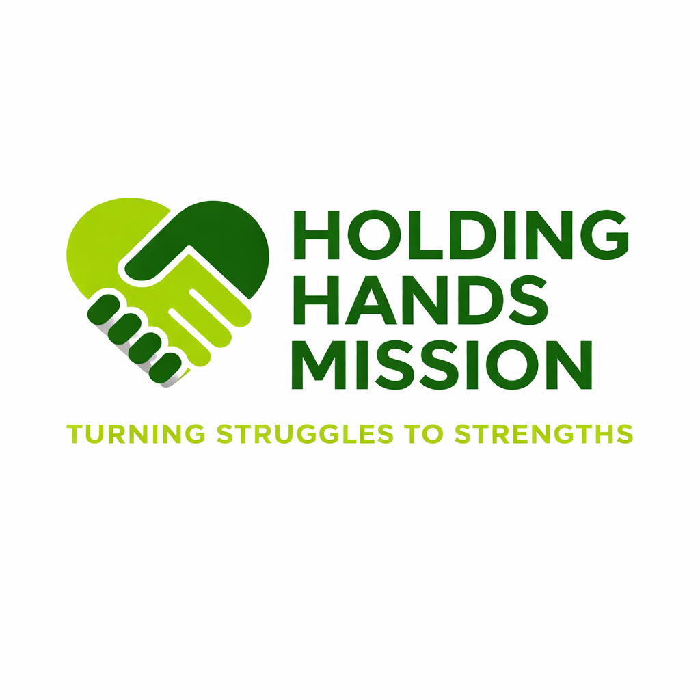

Turning Struggles to Strengths
We provide compassionate, professional care to help individuals overcome addiction and rebuild their lives.
Call Now: 0706 466 150Safe, medically supported detox to begin your recovery journey.
Individual and group therapy sessions for lasting recovery.
Continued guidance and relapse prevention support.
Holding Hands Mission is dedicated to helping individuals overcome drug and alcohol addiction in a safe, supportive, and respectful environment. We believe recovery is possible for everyone.
Phone: 0706 466 150
Location: Naivasha, Kenya
Call for Help